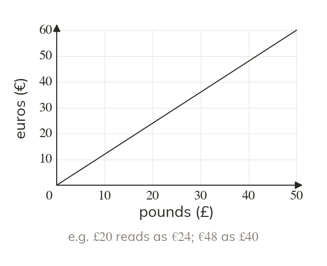
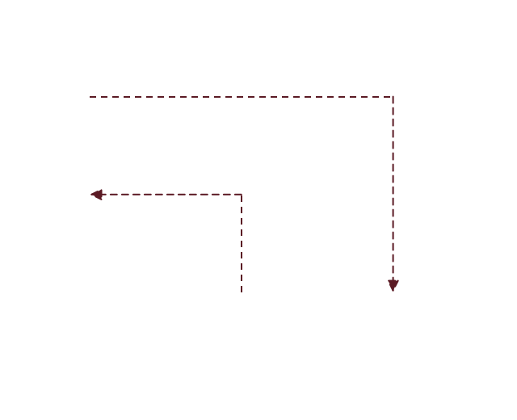
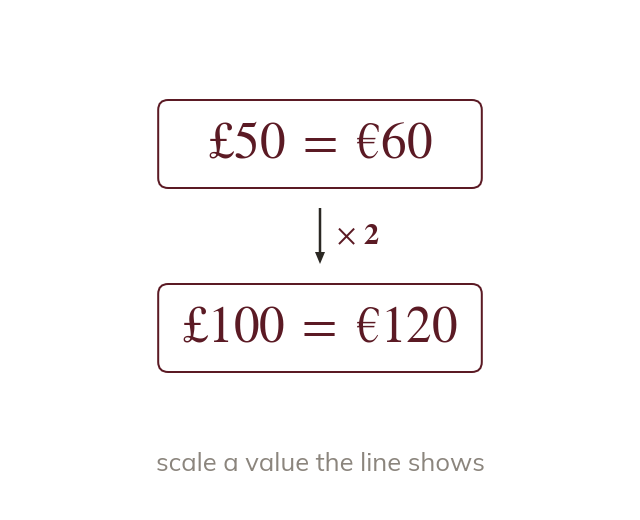
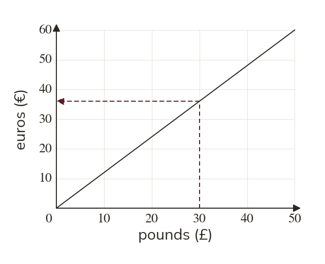
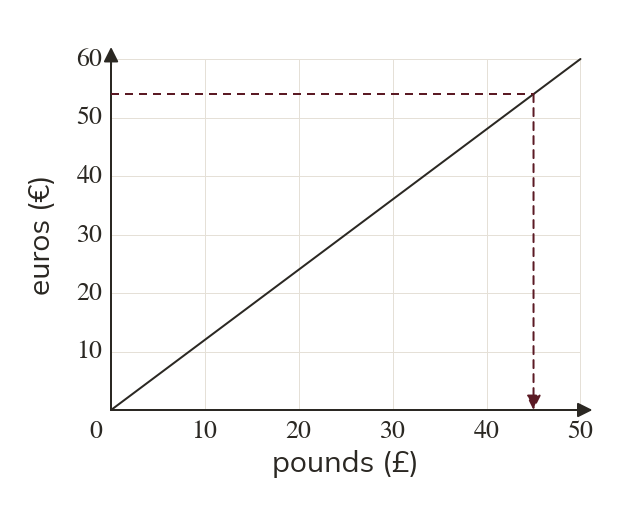

Topic 9.11 · Speed-Time Graphs and Area · Lesson 4 of 5
Conversion Graphs
Before a holiday, a conversion graph turns pounds into euros at a glance. Today is reading one in both directions, and then reading graphs that show change over time.
By the end you’ll know…
A conversion graph is a straight line through the origin, because the two units are in direct proportion.
It converts in both directions: read across from one axis and down to the other.
Values beyond the plotted line can be found by scaling, since the relationship is proportional.
A time-series graph shows a quantity measured at intervals over time, with the points joined to show the trend.
Only the plotted points are measured values; the joining lines are an estimate of what happened in between.
By the end you can
G3Use a conversion graph to convert between units in both directions.
G5Interpret other time-series graphs, describing trends over time.
Work down the page at your own pace. Write every answer in your book first, then click to check it.
01
Do Now
About 5 minutes
1
Convert litres to millilitres.
ml.
2
Convert g to kilograms.
kg.
3
The line is drawn on a graph. What is when ?
4
On the same line, what is x when ?
Remember these?
LAST LESSONA velocity-time graph is a triangle with base seconds and height m/s. Find the distance.
½ × m.
LAST WEEKA block has mass g and volume cm³ Find its density.
g/cm³
LAST TERMFind the simple interest on at per year for years.
LAST YEARFind the area of a circle of radius cm, in terms of π.
cm²
02
Learn
Read each card, then follow the worked examples one step at a time.


A straight line through the origin
Two units in direct proportion give a straight line through the origin. It converts in both directions.
A conversion graph is a straight line through the origin, because the two units are in direct proportion. It converts in both directions.

Beyond the line
Find a value past the line by scaling one it shows. is twice
A value past the end of the line is found by scaling one it does show. is twice
WORKED EXAMPLE A
Convert to euros.

From up to the line, then across:
WORKED EXAMPLE B
Convert to pounds.

From across to the line, then down:
YOUR TURN · a
The line joins and in pounds and euros. Convert to euros.
YOUR TURN · b
On the same line, convert to pounds.
YOUR TURN · c
The graph only reaches Convert to euros.
is so is
YOUR TURN · d
The graph shows Find the exchange rate in euros per pound.
per pound
03
Check your understanding
Pick an answer. If it's wrong, the feedback tells you which mistake it was.
A conversion line joins and pounds across and euros up. What is in euros?
Yes. so is half:
Not quite. You converted the wrong way. Go up from to the line:
Not quite. Go up to the line, then across:
Not quite. Scale, don't add: is half of so half of
Why does a conversion graph pass through the origin?
Not quite. Not every graph does. This one does because is
Yes. is always so the line starts at the origin.
Not quite. Steepness is the exchange rate. The origin is there because
Not quite. It's not the scale: is worth
On the same graph, what is in pounds?
Not quite. That converted £ to €. Go from across to the line:
Not quite. Go from across to the line, then down:
Not quite. Scale up: so
Yes. so
04
Practise
mark as you go
Checkpoint. The line shows Convert to euros and to pounds.Show your teacher before you go on